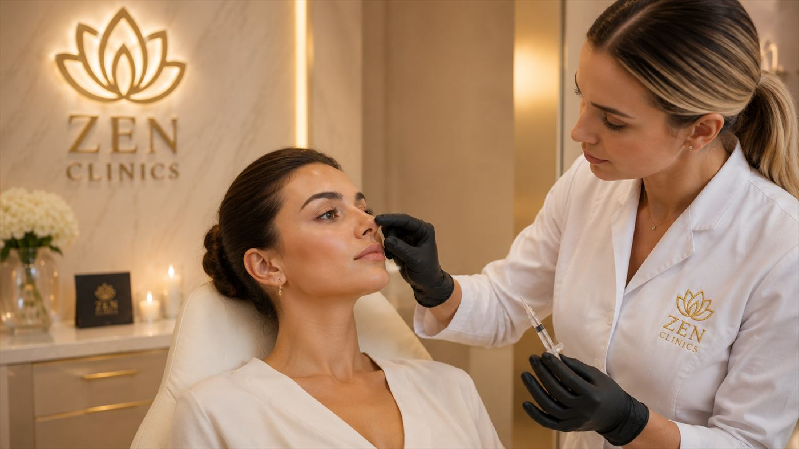
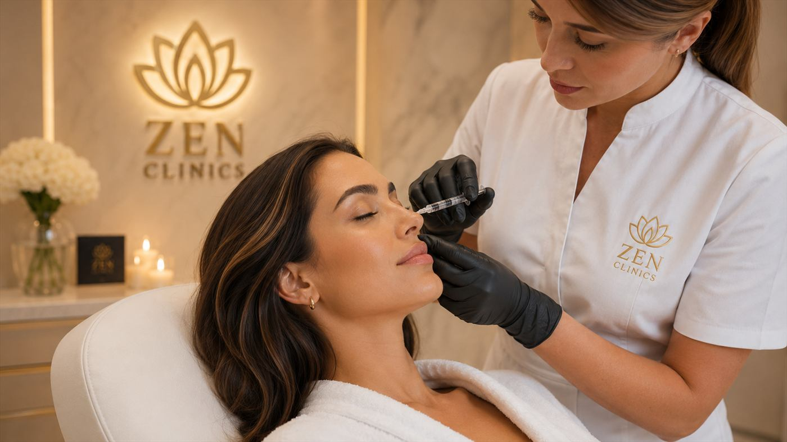
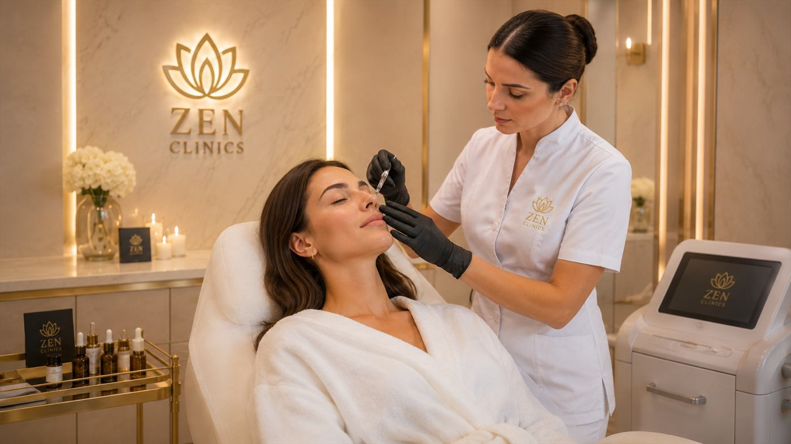

Profil nazal
Poate fi discutată pentru mici denivelari, asimetrii sau zone care afecteaza linia profilului, în funcție de anatomie.

Injectări premium
Corectii subtile ale profilului nazal, discutate individual și adaptate anatomiei tale.
Armonizare facială
Rinocorectia cu acid hialuronic este o procedură minim invaziva care poate fi discutată pentru ajustari discrete ale profilului nazal, fără a inlocui indicația unei interventii chirurgicale atunci când aceasta este necesară.
Evaluarea este esentiala: medicul analizeaza forma nasului, proiectia, unghiurile, simetria, calitatea tesuturilor și istoricul medical, pentru a decide daca procedură este potrivită și ce limite trebuie respectate.
Obiectivul este armonizarea profilului și a proportiilor feței, cu o abordare prudentă, fără promisiuni absolute și fără modificari exagerate.
Cadru vizual



Potrivire
Indicația finala se stabilește în urma consultației. Punctele de mai jos sunt orientative și nu înlocuiesc evaluarea medicului.
Poate fi discutată pentru mici denivelari, asimetrii sau zone care afecteaza linia profilului, în funcție de anatomie.
Urmareste echilibrarea proportiilor, nu schimbarea agresiva a trasaturilor sau crearea unui aspect artificial.
Se tine cont de vascularizatie, piele, proceduri anterioare, istoric medical și asteptari realiste.
Experiența
Discutie despre obiective, istoric medical, proceduri anterioare și asteptari realiste.
Evaluarea nasului din fața și profil, a unghiurilor, simetriei și zonelor care pot fi abordate.
Se stabilesc prudent zonele, cantitatea orientativa, limitele și recomandările necesare.
Tratamentul se desfășoară conform planului, cu recomandări post-procedură și monitorizare daca este necesar.
Obiective
Fiecare obiectiv este discutat realist, în funcție de anatomie, indicație, tehnica și evoluția individuala.
Poate contribui la o linie nazala mai armonioasa, atunci când indicația și anatomia permit.
Obiectivul este integrarea nasului in ansamblul feței, cu ajustari discrete și dozate.
Abordarea pune accent pe corectii fine, adaptate profilului, fără exagerari vizuale.
Detalii importante
Datele despre durata, recuperare, indicații sau contraindicații trebuie validate in consultație, în funcție de anatomie și context medical.
Pentru anumite cazuri, rinoplastia chirurgicala poate fi optiunea potrivită. Diferenta se stabilește in consultație, după evaluare.
Zona nasului necesita evaluare atentă și tehnica prudentă. Se discuta riscurile, limitele și situatiile in care procedură nu este indicata.
Durata, pregătirea și recomandările post-procedură se stabilesc în consultație, în funcție de indicație, tehnică, istoricul medical și obiectivul urmărit.
FAQ
Decizia se ia în urma unei consultații, după evaluarea anatomiei nasului, istoricului medical, procedurilor anterioare și obiectivelor tale.
Nu in toate cazurile. Rinocorectia non-chirurgicala poate aborda doar anumite ajustari subtile; pentru alte situatii poate fi recomandata evaluare chirurgicala.
Zonele posibile se stabilesc individual. Se pot discuta mici ajustari de profil, contur sau armonie, dar doar daca anatomia permite o abordare sigura.
Durata poate varia în funcție de produs, metabolism, anatomie și stil de viata. Estimarea se discuta individual in cadrul consultației.
Da, ca orice procedură injectabila. Riscurile, contraindicațiile și limitele se explica înainte de procedură, în funcție de istoricul și anatomia fiecarui pacient.
Recomandările post-procedură se stabilesc în funcție de tehnica, zona tratată și evoluția individuala. Respectarea lor este importanta pentru siguranță.
Experiența
La ZEN Clinics, frumusețea ta este înțeleasă în profunzime. Îmbinăm știința, arta și empatia pentru rezultate care te reprezintă.
Consultație
Discuta cu echipa ZEN Clinics despre optiunile potrivite, limitele procedurii și pasii recomandati pentru profilul tau.
Contactează-ne